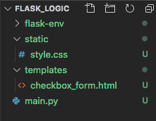
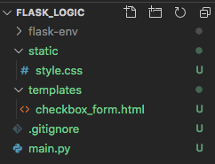

22.3. Chapter Practice¶
Just like last chapter, we will create a small project and update it as we go along. Follow the instructions below to get started.
Open your
local_practicefolder in Visual Studio code. Add a new directory calledflask_logic.From the File menu, open
flask_logicin your workspace. Initialize the directory as a new Git repository.Use the terminal to set up and activate a new virtual environment for the project. This time, we will name the environment
flask-env.Mac: $ python3 -m venv flask-env $ . flask-env/bin/activate Windows: $ py -3 -m venv flask-env $ . flask-env/Scripts/activate
Install Flask with
pip install flask.Use the buttons in the left panel to add the files and folders shown in the filetree below. For now, leave the Python, HTML, and CSS files empty.

22.3.1. Pro Tip!¶
Since we are using version control, Git tracks every file we put into the project folder. This includes the thousands of small files created when we set up the virtual environment and install Flask. Since we won’t change any of these ourselves, tracking them clutters up our repository. These files should be ignored when we save and commit changes. Fortunately, Git allows us to create a list of items that can be skipped.
Tip
As a general rule, we should NOT track files that we didn’t write ourselves.
In Visual Studio Code, add one more file to the project folder. Call it
.gitignore. Any file or directory names included in this document will be left out of the version control.Open
.gitignorein the workspace, then paste the following items.1 2 3 4 5 6 7 8 9 10 11 12 13 14
flask-env/ *.pyc __pycache__/ instance/ .pytest_cache/ .coverage htmlcov/ dist/ build/ *.egg-info/
Line 1 is the name of the directory for the virtual environment. Once we save,
flask-envturns gray in the file tree. The folder will no longer be tracked by Git.For different projects, change line 1 to match the name used for the virtual environment.
Save and commit your work.